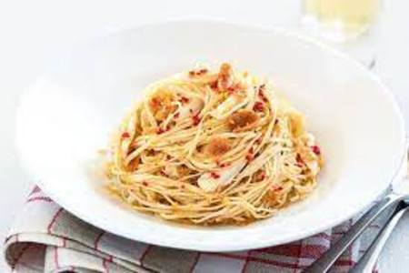

Basic Pasta
|  |
Ingredients
- Dried Pasta... any work well
- Water
- Salt
- Tomato Puree
- Cheese/Tuna/Both/None
Method
- Boil your pasta adding salt to the water for later on.
- While pasta is cooking grate your cheese/drain your tuna.
- When the pasta is cooked add about half a tube of tomato puree, stirring well, to give you a passata consistency. Of course you can just use passata if you want, and drain the pasta instead.
- Then, add the tuna if using any, stirring it in well. Leave for a minute to heat up the tuna. Add salt/pepper to taste.
- Serve into a bowl and sprinkle lots of cheese on top